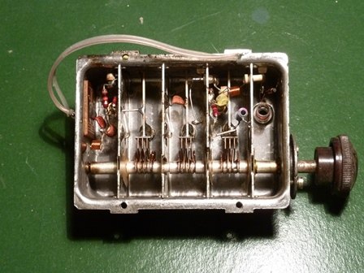

Cosa sarà mai questo strano oggetto qui sotto?

Vuoi vederlo anche dentro? Eccolo:

Che sia roba elettronica è chiaro, che sia roba molto vecchia anche, perchè oggi con tutto questo materiale metallico ci fanno una lavatrice, non un aggeggino grande mezza mano.
Quando questo oggetto arrivò, a fine 1961, fu accolto come manna dal cielo da quella ingenua e felice società degli anni sessanta perchè veniva a portare nelle case del boom economico nientepopòdimeno che il SECONDO PROGRAMMA TV!
Da domani, DUE canali sull'elettrodomestico più amato dagli italiani: ragazzi, questo sì che è progresso!
Ecco come più o meno funzionò all'esordio la faccenda:
1- Facciamo finta che il Ragionier Spartano abbia comprato da un paio d'anni un bel televisore di gran marca, un Grundig a 19 valvole col suo tubo catodico da 17 pollici sporgente un chilometro dietro il mobilone di legno lucidissimo impiallacciato noce.
Tutto bene finchè arriva una grandissima novità in fatto di TV: la RAI ha lanciato il SECONDO PROGRAMMA!
Ma siamo negli anni '60 e il ragioniere non può permettersi di comprare ex novo un altro televisore per vederlo.
2- Allora Spartano carica sulla millecento il suo cassone e lo porta dal "radiotecnico" di fiducia (allora i radiotecnici, oggi completamente estinti, erano numerosi) e lo incarica, come tanti altri italiani, di "installare il secondo programma" sul suo televisore.
3- Detto fatto; il radiotecnico fa col trapano due bei buchi nel mobile finto noce: uno per farci passare un perno girevole e uno per far passare un interruttore a levetta, di quelli col pallino in cima.
4- Quale perno girevole? Proprio quello dell'immagine vista sopra. L'accrocco è opportunamente avvitato all'interno del mobile (tanto di spazio ce n'è d'avanzo) e il perno sporge fuori munito di opportuna manopola.
5- Non è finita: il medesimo radiotecnico fa un viaggetto sul tetto della casa degli Spartano e, accanto all'antenna "del primo programma" ne piazza un'altra più piccola, appunto quella "del secondo".
6- Alla fine della piattina di discesa (allora non c'erano i cavi coassiali e dall'antenna agli appartamenti si scendeva con una selva di "piattine", linee bifilari in polietilene) il radiotecnico monta dietro il televisore uno scatolino detto "demiscelatore" che manda i segnali televisivi metà alla vecchia presa d'antenna e metà all'oggetto misterioso protagonista di questa storiella.
[Un pezzetto della piattina di ingresso la si può vedere anche nelle foto sopra]
7- E' quasi finita: da stasera il Ragioniere e la sua signora (Adele) possono guardare anche il secondo programma TV (dalle 21:05 alle 23:15; un paio d'ore, non di più!) ... ma prima ci vuole la "sintonizzazione"!
8- Acceso il Grundig monumentale, si sposta l'interruttore sporgente dal buco laterale da "1" a "2" e si gira lentamente (lentamente, ragioniere!) la manopola fino a sintonizzare il segnale, che il radiotecnico assicura dover arrivare abbastanza bene nella zona.
Evviva, un po' di neve, ma funziona!
-Adele, telefona alla moglie del ragionier Picchetti e dille che noi stasera ci guardiamo "Caccia al numero" con Mike Bongiorno sul SECONDO programma.
Vediamo se sono sempre loro i primi in tutto...-
...°°°OOO°°°...
Ma, a parte la piccola sceneggiata, cos'era in pratica quel "coso"?
Era semplicemente un convertitore UHF, che abbassava la frequenza ricevuta dall'antenna in gamma UHF (da 470 a 860 MHz) a circa 43 MHz, che era la Media Frequenza dei vecchi televisori; insomma una frequenza alla quale erano predisposti per il funzionamento (il discorso sarebbe lungo e complesso, la metto giù solo così).
Era un oggetto all'avanguardia per quei tempi perchè le frequenze in gioco molto alte obbligavano all'uso di transistor speciali (nel convertitore di cui sopra i famosi AF239 e AF139).
I canali del secondo andavano dal 21 al 69 e girando la manopola si trovava il canale della propria zona, un po' come la sintonia delle vecchie radio.
Una volta "sintonizzato", la manopola non si toccava più e si agiva solo sull'interruttore... da una parte il Primo programma, dall'altra il Secondo.
E le televendite? E i canali tematici? E le TV private? E i film "on demand"?... Fantascienza, assoluta fantascienza.